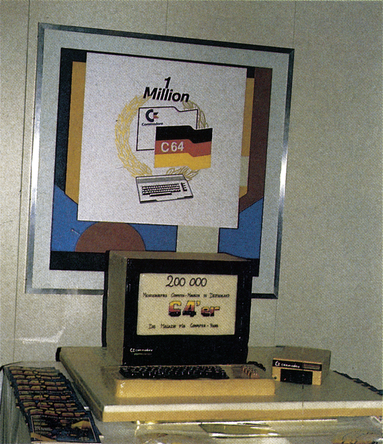
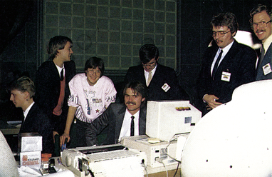
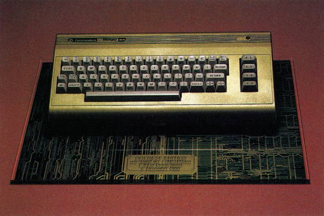

Der Millionär
In einem festlichen Rahmen wurde im BMW-Museum der einmillionste verkaufte Commodore 64 in Deutschland gefeiert. Der C 64 gilt bereits heute als der »Käfer« unter den Computern.
Es ist schon eine stolze Leistung, was der mittlerweile wirklich zur Legende gewordene C 64 erreicht hat — er ist zum Standard bei den Heimcomputern nicht nur in Deutschland geworden. Eine Million Stück dieses Universalgenies haben in diesem unseren Lande ihren Besitzer gefunden, weltweit werden es demnächst sogar zehn Millionen sein. Fürwahr ein Volkswagen der Bit- und Byte-Industrie. Dies nahm Commodore Büromaschinen GmbH (die deutsche Tochter des US-Konzerns) zum Anlaß, sich für einen Abend das komplette BMW-Museum in München zu mieten und Vertreter der Presse und Industrie einzuladen, um gemeinsam dieses Ereignis zu feiern. Geboten wurde neben einer Musik-Band, die ihre Synthesizer-Anlage mit zwei SX 64 steuert und elektronische Musik vom Feinsten zum Besten gab, Talkshows mit Barbara Dieckmann, Computer-Kabarett mit Dietmar Eirich, auch eine Bescherung zum Nikolaustag in Form eines goldenen C 64.

Der Rahmen war richtig gewählt, zeigen sich doch interessante Parallelen in der Entwicklungsgeschichte von Automobil und Computer. Um die Jahrhundertwende wurde beispielsweise prognostiziert, daß es in Deutschland nie mehr als 250000 Automobile geben könne, da es nicht mehr Chauffeure gäbe. Ganz ähnlich klang die Aussage eines bekannten Fachjournalisten bei der Vorstellung des C 64-Vorgängers im Jahre 1978: Mehr als 250000 Computer seien in der Bundesrepublik nicht denkbar, da es an EDV-Spezialisten mangele.

Dennoch konnten sowohl das Auto als auch der Heimcomputer die ihnen anfangs nicht zuerkannte wirtschaftliche Bedeutung erlangen.
Commodore wies in diesem Zusammenhang auch darauf hin, daß der C 64 zu einer Popularisierung des Computers in breiten Schichten der Bevölkerung beigetragen hat. Bezogen auf die Hauptzielgruppe der Haushalte mit Kindern und Jugendlichen unter 18 Jahren betrage der Sättigungsgrad bereits 40 Prozent. Die Millionenzahl zeige eindrucksvoll, in welch hohem Maße sich der Heimcomputer schon heute seinen Platz neben Fernseher, Hi-Fi-Anlage und Videorecorder in bundesdeutschen Haushalten erobert hat.

Das Unternehmen hält Skeptikern entgegen, daß nicht die Schwäche des Marktes die renommierte Konkurrenz aussteigen ließ, sondern die Stärke von Commodore. 450000 Heimcomputer wurden im vergangenen Jahr verkauft. 80 Prozent davon waren von Commodore. Doch nicht allein der Computer selbst ist von diesem Boom betroffen, sondern auch die Zulieferer von Monitoren, Laufwerken, Druckern, Erweiterungen, Software, Büchern und Zeitschriften konnten an dem Erfolg partizipieren. Daraus ergibt sich ein jährliches Marktvolumen von rund drei Milliarden Mark. Doch diese nackten Zahlen täuschen über die tatsächliche Bedeutung des C 64 für die innovative Entwicklung in der Bundesrepublik hinweg. Hat das Automobil zur Mobilität des Körpers beigetragen, kommt durch die leichte Zugänglichkeit der Computer- und Kommunikationstechnologie durch einen weitverbreiteten Heimcomputer nun auch die Mobilität des Geistes hinzu.